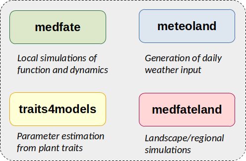
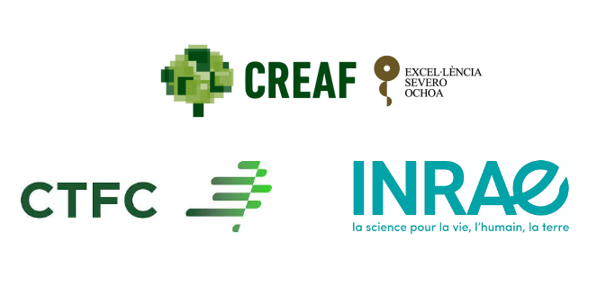

Introduction
Package medfate is designed to assist forest scientists to simulate forest functioning and dynamics, using cohort-based description of forest stands. The package provides functions to simulate the following processes:
- Soil water balance (De Cáceres et al. 2015)
- Plant hydraulics, transpiration and photosynthesis (De Cáceres et al. 2021, Ruffault et al. 2022)
- Carbon balance, plant growth, senescence and mortality (De Cáceres et al. 2023)
- Forest dynamics, including recruitment and management (De Cáceres et al. 2023)
The models are parameterized for species of the Mediterranean region (particularly for Spain), but forests with different composition could be modelled with different parameter sets.
Package installation
Package medfate can be found at CRAN, where it is updated every few months. Installation from CRAN can be done via:
install.packages("medfate")Users can also download and install the latest stable versions GitHub as follows (required package remotes should be installed/updated first):
remotes::install_github("emf-creaf/medfate")Documentation and training
A number of vignettes illustrate how to run simulation models in medfate. These, and additional articles regarding parameter estimation and model evaluation can be found here.
A complete documentation of the models included in the package can be found in medfate’s reference book.
Presentation slides on a course devoted to process-based forest modelling with medfate can be found here.
Companion R packages
During the development of medfate some functions were originally placed there but then moved to more specialized packages which evolve together with medfate:
- Package medfateland extends medfate by allowing simulations to be performed in a spatially explicit context.
- Package traits4models provides functions to help creating species parameter inputs for medfate and medfateland simulation functions.
Two other packages complete the simulation framework, but can be used for many other purposes beyond forest modelling:
- Package meteoland allows generating daily weather input for simulation models in medfate and medfateland. Package meteoland is a dependency for medfate and medfateland, but can be used independently to obtain daily weather data.
- Package forestables allows reading and harmonizing forest inventory data to a common data structure. Initialization workflows in medfateland can use data from forestables, but the data structures of the package can be used for many studies beyond modelling.
The relationships between the five packages are illustrated in the figure below, where black arrows indicate package dependencies and gray arrows indicate model parameter or data provision.

Authorship
Package medfate is developed and maintained by the Ecosystem Modelling Facility unit at CREAF (in Spain), in close collaboration with researchers from URFM-INRAE (in France) and CTFC (in Spain).

Funding
- Fellowship: Ramon y Cajal research fellowship to M. De Cáceres. Financial Entity: Ministerio de Economía y Competitividad ( RYC-2012-11109). Duration from: 01/01/2013 to: 31/12/2018.
- Research project: Forecasting of ecosystem services on forests: impacts and adaptation to extreme climate events (FORESTCAST). Financial Entity: Ministerio de Economia y Competitividad (CGL2014-59742-C2-2-R). Duration from: 01/01/2015 to: 31/12/2017. PI: Lluís Brotons/Miquel De Cáceres.
- Research project: Modeling plant water use and drought resistance strategies across scales (DRESS). Financial Entity: Ministerio de Economia y Competitividad (CGL2017-89149-C2-2-R). Duration from: 01/01/2018 to: 31/12/2021. PI: Miquel De Cáceres.
- Research project: Boosting process-based models to project forest dynamics and associated ecosystem services at stand-to-regional scales (BOMFORES). Financial Entity: Ministerio de Ciencia e Innovación (PID2021-126679OB-I00). Duration from: 01/09/2022 to: 31/08/2024. PI: Miquel De Cáceres.
- Research project: Improving the modelling of key forest dynamic processes to forecast long-term changes in Mediterranean forests under climate change (IMPROMED). Financial Entity: Ministerio de Ciencia e Innovación (PID2023-152644NB-I00). Duration from: 01/09/2024 to: 31/08/2025. PI: Miquel De Cáceres/Josep Mª Espelta.
References
De Cáceres M, Martínez-Vilalta J, Coll L, Llorens P, Casals P, Poyatos R, Pausas JG, Brotons L. (2015) Coupling a water balance model with forest inventory data to predict drought stress: the role of forest structural changes vs. climate changes. Agricultural and Forest Meteorology 213: 77-90 (https://doi.org/10.1016/j.agrformet.2015.06.012).
De Cáceres M, Mencuccini M, Martin-StPaul N, Limousin JM, Coll L, Poyatos R, Cabon A, Granda V, Forner A, Valladares F, Martínez-Vilalta J (2021) Unravelling the effect of species mixing on water use and drought stress in holm oak forests: a modelling approach. Agricultural and Forest Meteorology 296 (https://doi.org/10.1016/j.agrformet.2020.108233).
Ruffault J, Pimont F, Cochard H, Dupuy JL, Martin-StPaul N (2022) SurEau-Ecos v2.0: a trait-based plant hydraulics model for simulations of plant water status and drought-induced mortality at the ecosystem level. Geoscientific Model Development 15, 5593-5626 (https://doi.org/10.5194/gmd-15-5593-2022).
De Cáceres M, Molowny-Horas R, Cabon A, Martínez-Vilalta J, Mencuccini M, García-Valdés R, Nadal-Sala D, Sabaté S, Martin-StPaul N, Morin X, D’Adamo F, Batllori E, Améztegui A (2023) MEDFATE 2.9.3: A trait-enabled model to simulate Mediterranean forest function and dynamics at regional scales. Geoscientific Model Development 16, 3165–3201 (https://doi.org/10.5194/gmd-16-3165-2023).